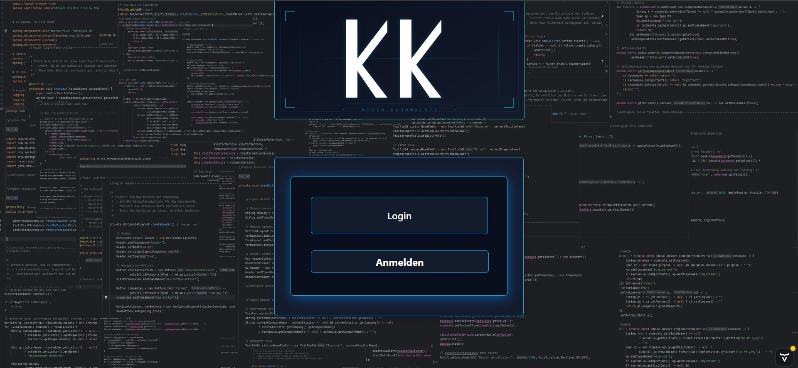
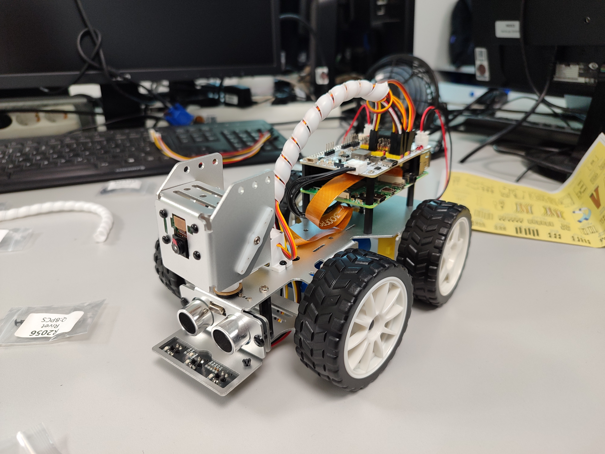
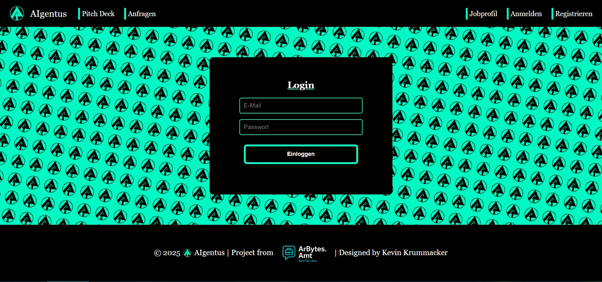

Projekte
Auf dieser Seite finden Sie eine Auswahl meiner bisherigen Projekte, die meine Fähigkeiten und
Erfahrungen in der Softwareentwicklung demonstrieren.
Jedes Projekt wurde mit Sorgfalt
entwickelt und zeigt meine Kompetenz in verschiedenen Programmiersprachen, Frameworks und
Technologien.
Auch diese Website wurde von mir selbst konzipiert, gestaltet und entwickelt und
dient als zentrale Präsentation meiner Projekte und meines beruflichen Werdegangs.
Ich lade Sie ein,
die Projekte zu erkunden und mehr über meine Arbeit zu erfahren.
Sie finden meine Projekte auch auf GitHub.
Besuchsverwaltungs- und Anzeigesystem
Mehrschichtige Full-Stack-Webanwendung zur Verwaltung und Anzeige von
Besucherdaten inklusive Empfangsanzeige.
Die Anwendung ermöglicht die Erfassung, Verwaltung und Darstellung von
Besuchen mit Such-, Filter- und Echtzeit-Funktionen.
Details anzeigen
Entwicklung einer mehrschichtigen Full-Stack-Webanwendung zur Verwaltung und Anzeige von Besuchsdaten. Ziel des Projekts war die digitale Erfassung, Verwaltung und übersichtliche Darstellung von Besuchsinformationen mit einer integrierten Empfangsanzeige.
Die Anwendung wurde mit Java, Spring Boot und Vaadin umgesetzt und basiert auf einer strukturierten 4-Schichtenarchitektur. Neben der Benutzeroberfläche wurden die Geschäftslogik, Datenbankanbindung und Persistenz mit JPA/Hibernate sowie einer H2-Datenbank entwickelt. Zusätzlich wurden CRUD-Funktionen, Such- und Filtermöglichkeiten, DTOs sowie REST-Schnittstellen umgesetzt.
Bei der Umsetzung wurden verschiedene Bereiche moderner Softwareentwicklung verbunden: von der Strukturierung der Anwendung über die Entwicklung von Backend- und Frontend-Komponenten bis hin zu Tests, Fehleranalyse und technischer Dokumentation.
Einblicke

GitHub: Visitor-Management-System
PiCar
Steuerungssoftware für ein autonomes Fahrzeug mit Ultraschall-, Kamera- und Grayscale-Sensoren zur Hindernis- und Abgrunderkennung.
Details anzeigen
Entwicklung einer Steuerungssoftware für ein autonomes Raspberry-Pi-Fahrzeug. Das Projekt beschäftigt sich mit der Verarbeitung verschiedener Sensordaten und der Umsetzung von Entscheidungslogik für die Navigation.
Umgesetzt wurden Funktionen zur Hinderniserkennung mittels Ultraschallsensor, die Auswertung von Kameradaten sowie die Erkennung von Fahrbahnbegrenzungen über Grayscale-Sensoren. Dabei lag der Fokus auf der Verbindung von Softwareentwicklung, Hardwareansteuerung und praktischer Problemlösung.
Einblicke

GitHub: PiCar
Firmenwebsite
Webanwendung für ein fiktives Unternehmen mit dynamischen Inhalten und relationaler Datenbank.
Details anzeigen
Entwicklung einer dynamischen Firmenwebsite für ein fiktives Unternehmen mit Laravel und MariaDB.
Das Projekt umfasst die Umsetzung einer Webanwendung mit strukturierter Datenhaltung, serverseitiger Logik und einer responsiven Benutzeroberfläche. Dabei wurden grundlegende Konzepte moderner Webentwicklung wie Routing, Datenbankanbindung und Trennung von Darstellung und Logik umgesetzt.
Einblicke

GitHub: Firmenwebsite
Ticketsystem
CRUD-Anwendung zur Verwaltung von Support-Tickets und Benutzerdaten mit Datenbankanbindung, umgesetzt in drei Sprachen.
Details anzeigen
Entwicklung einer CRUD-Anwendung zur Verwaltung von Support-Tickets, Benutzerdaten und Bearbeitungsständen.
Das Projekt wurde in Java und C# umgesetzt und beinhaltet die Verwaltung von Datenobjekten, Benutzerinteraktionen sowie die Anbindung an eine Datenbank. Dabei wurden grundlegende Konzepte der objektorientierten Programmierung und Softwarestrukturierung angewendet.
GitHub: Ticketsystem Java | Ticketsystem C#
Weitere Projekte
Neben den größeren Projekten entstanden während meiner Ausbildung und
Weiterbildung weitere kleinere Anwendungen, mit denen verschiedene
Programmierkonzepte und Technologien praktisch umgesetzt wurden.
Dazu gehören unter anderem ein Python-Textadventure, eine Quiz-Anwendung
sowie ein Warenkorb-System. Die Projekte dienten dazu, unterschiedliche
Ansätze der Softwareentwicklung kennenzulernen und Programmierkenntnisse
zu vertiefen.
GitHub:
Python-Textadventure
|
Quiz-Anwendung
|
Warenkorb-System
Details anzeigen